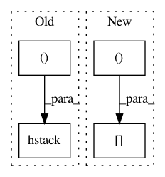

10c43c7c08cdce3583e68834133a89eb0dbfcf78,chainercv/links/model/ssd/multibox_coder.py,MultiboxCoder,encode,#MultiboxCoder#Any#Any#Any#,85
Before Change
index[mask] = iou[mask].argmax(axis=1)
mb_bbox = bbox[index]
mb_loc = xp.hstack((
((mb_bbox[:, :2] + mb_bbox[:, 2:]) / 2
- self._default_bbox[:, :2]) /
(self._variance[0] * self._default_bbox[:, 2:]),
xp.log((mb_bbox[:, 2:] - mb_bbox[:, :2])
/ self._default_bbox[:, 2:]) /
self._variance[1]))
// [0, n_fg_class - 1] -> [1, n_fg_class]
mb_label = label[index] + 1
// 0 is for background
After Change
mb_loc = xp.empty_like(mb_bbox)
mb_loc[:, :2] = (mb_bbox[:, :2] - self._default_bbox[:, :2]) / \
(self._variance[0] * self._default_bbox[:, 2:])
mb_loc[:, 2:] = xp.log(mb_bbox[:, 2:] / self._default_bbox[:, 2:]) / \
self._variance[1]
// [0, n_fg_class - 1] -> [1, n_fg_class]
In pattern: SUPERPATTERN
Frequency: 3
Non-data size: 4
Instances
Project Name: chainer/chainercv
Commit Name: 10c43c7c08cdce3583e68834133a89eb0dbfcf78
Time: 2017-06-19
Author: Hakuyume@users.noreply.github.com
File Name: chainercv/links/model/ssd/multibox_coder.py
Class Name: MultiboxCoder
Method Name: encode
Project Name: chainer/chainercv
Commit Name: 956268db11e19b28ce4e9b75a38862694f397090
Time: 2018-12-11
Author: Hakuyume@users.noreply.github.com
File Name: chainercv/links/model/fpn/head.py
Class Name: Head
Method Name: __call__
Project Name: chainer/chainercv
Commit Name: 10c43c7c08cdce3583e68834133a89eb0dbfcf78
Time: 2017-06-19
Author: Hakuyume@users.noreply.github.com
File Name: chainercv/links/model/ssd/multibox_coder.py
Class Name: MultiboxCoder
Method Name: decode